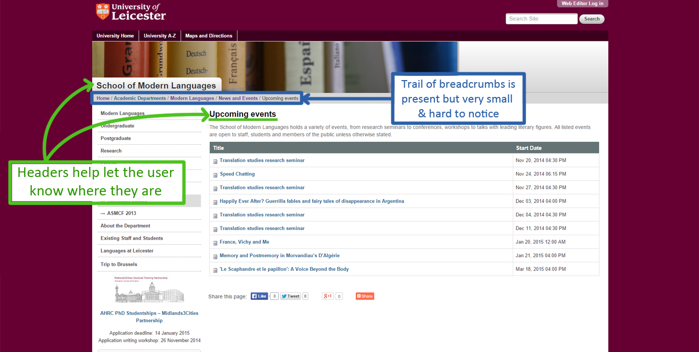
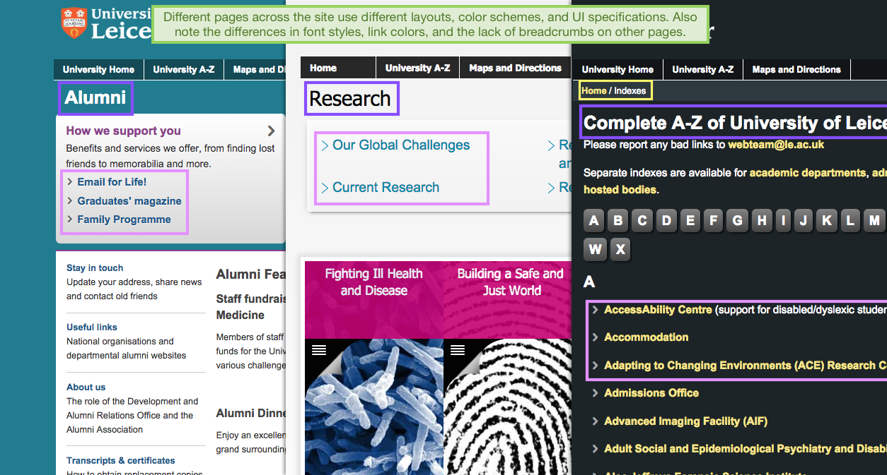
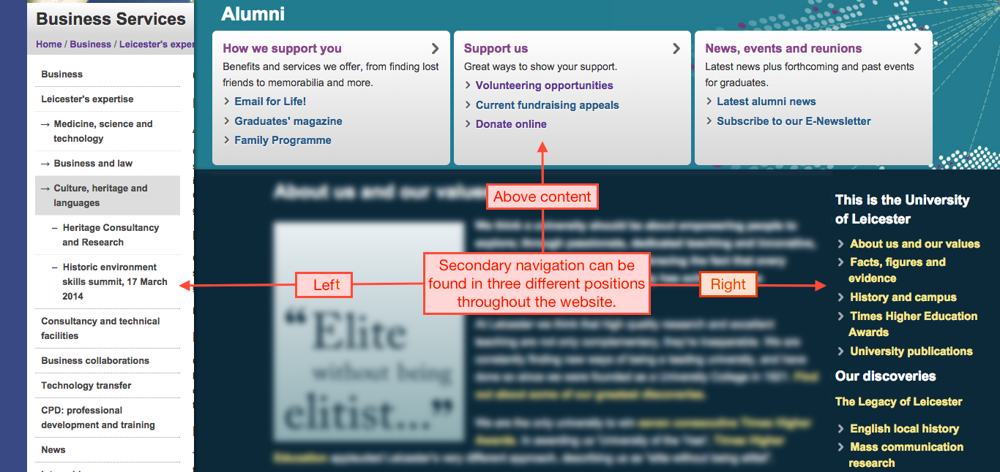
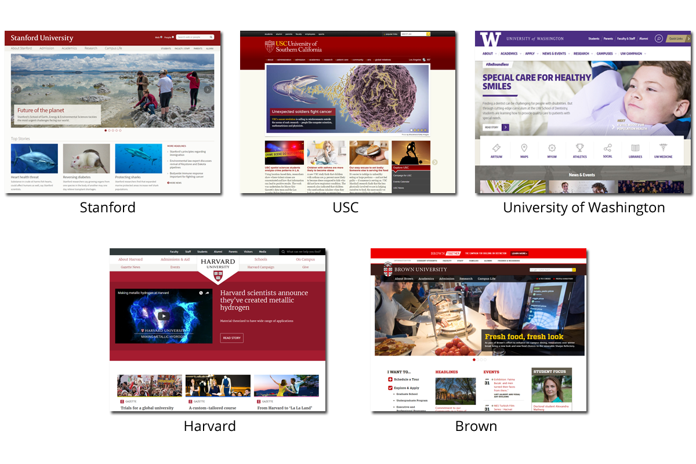

The University of Leicester’s website is a website designed to help inform prospective students and families about what they're about and how to apply. However, the current website was cluttered and required many clicks to apply as a prospective student.
As a team of 3, we evaluated the usability and information architecture of the University of Leicester’s website in order to redesign it. Because the scope of a University website is quite wide, we primarily focused on the path a prospective student would take to find out about housing.
I, along with my other two teammates, evaluated the current university website against Nielsen's 10 Usability Heuristics for User Interface Design and were thus able to pinpoint the major flaws of the current website.



After pinpointing the current usability issues as well as a prospective student's painpoints with the current website, we did a competitive analysis of a couple other university websites. We focused on the information architecture of each university website to help determine what the best global navigation, secondary navigation, and key labels to put in our own redesign.
After our research, we decided upon the following navigations:
Main Global Nav: About, Academics, Admissions, and Research.
Global User Nav: Students, Alumni, Parents, and Faculty and Staff
Other Main Labels: Blackboard, Maps and Directions, A-Z Index, News, Events

I learned alot about the importance of information architecture and how easily a website can violate the usability heuristics. With our redesign, we managed to reduce the number of clicks to get to the housing page from a confusing 5 clicks down to a more logical 3 clicks from the home page. Our path being Home -> Students -> Student Life -> Housing. When testing our design on multiple users telling them to try to find the Housing page on our website, 4/5 were able to find it easily within 3 clicks versus the 0/5 that were able to find it on the University of Leicester's website.